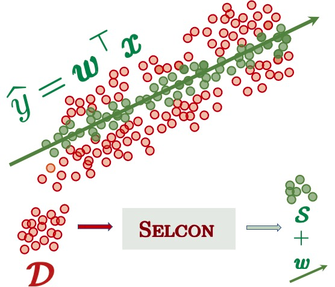
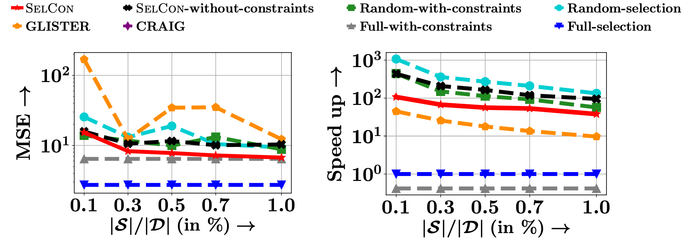

SelCon
One of the many ways towards efficient and cost-effective machine learning is to suitably select of a subset of training instances, so that the training algorithm can be run in an environment with limited resources. In our work, we design SELCON, a new subset selection method for regression problem, which leads to an efficient training without significant loss of accuracy.
Salient features
- We cast our problem as a joint optimization problem which aims to select the training subset as well as the model parameters subject to a set of constraints ensuring that the error on validation set remains below an acceptable level.
- We show that solving the above problem is equivalent to minimizing a monotone and approximate submodular function.
- We design an approximation algorithm to solve the problem. Moreover, we also show an approximation guarantee when the trained model parameters are imperfect estimates.
Problem setup
Given the training data \( \{\pmb{x}_i,y_i\}_{\in\mathcal{D}} \), a validation set \( \{\pmb{x}_j,y_j\}_{j\in\mathcal{V}} \) along with its partitions \( \mathcal{V}=V_1 \cup V_2 ... \cup V_Q\), we learn to select \(\mathcal{S}\subset \mathcal{D}\) and the parameters as follows:
$$ \underset{\pmb{w}, \mathcal{S} \subset \mathcal{D}, \{\xi_q \ge 0\}}{\text{minimize}} \quad \sum_{i\in \mathcal{S}}[\lambda ||\pmb{w}||^2 + (y_i-\pmb{w}^\top \pmb{x}_i)^2 ]+ C\sum_{q =1} ^Q \xi_q\\ \text{subject to, }\quad \frac{1}{|V_q|} \sum_{j\in V_q}(y_j-\pmb{w}^\top \pmb{x}_j)^2 \le \delta+\xi_q \ \forall\, q\in [Q], \\ |\mathcal{S}|=k,\qquad\qquad \qquad\qquad $$
where \(\delta\) indicates the acceptable level of error in validation set and \(\{\xi_q\}\) are the slack variables indicating the margin of error violation. We convert them into the dual optimization problem as follows: $$ \underset{\mathcal{S}}{\text{minimize}}\quad \underbrace{ \underset{\pmb{0}\le \pmb{\mu} \le C \pmb{1}}{\text{maximize}} \ \underset{\pmb{w}}{\text{minimize}} \quad F(\pmb{w},\pmb{\mu},\mathcal{S})}_{f(\mathcal{S})} $$ $$\text{where, }\ F(\pmb{w},\pmb{\mu},\mathcal{S}) = \sum_{i\in\mathcal{S}} [ \lambda||{\pmb{w}}||^2 + (y_i-h_{\pmb{w}}(\pmb{x} _i))^2] \\ \qquad\qquad\qquad \qquad\qquad\qquad +\sum_{q\in[Q]} \hspace{-1mm} \mu_q \hspace{-1mm} \left[ \frac{\sum_{j\in V_q}(y_j-h_{\pmb{w}}(\pmb{w}_j))^2}{|V_q|} - \delta\right]$$Characterizations of \(f(\mathcal{S})\)
We show that \(f(\mathcal{S})\) is monotone, approximately submodular and has finite curvature. More specifically, we have:- \(f(\mathcal{S}\cup a)-f(\mathcal{S}) \ge 0 \) for all \(a \not \in \mathcal{S}\)
- \(f(\mathcal{S})\) is \(\alpha\)-submodular with $$\alpha \ge 1-\frac{32(1+CQ)^2 \max_i ||\pmb{x}_i y_i||}{ \lambda \min_i |y_i|} $$
- \(f(\mathcal{S})\) has curvature \(\kappa\) with $$\kappa \le 1-\frac{\min_i y_i ^2}{(1+CQ)} $$
Approximation Algorithm
Given a current estimate of \(\mathcal{S}\), \our computes modular approximation components \(\alpha f(i | \mathcal{S} \backslash i)\) for \(i\in \mathcal{S}\) and \(f(i | \emptyset)/\alpha\) for \(i\not\in \mathcal{S} \). The algorithm next picks the \(k\) smallest values to minimize \( m \) and update \(\mathcal{S}\).
// Simultaneous computation of model parameters and S
for epoch in range(L):
w, mu, f_S = train(S)
for j in range(S.size[0]):
Sj = torch.cat([S[0:j], S[j+1:]])
_,_,f_Sj = train(Sj)
m[i] = alpha *(f_S - f_Sj)
for j in range(S_complement.size[0]):
m[j] = f[j] / alpha
S, S_complement = split(m,k)
Results
Our experiments show that our method trades off accuracy and efficiency more effectively than the current state-of-the-art. As an example, we present the results for NYSE-High datasets.
Contacts
If you have any questions/suggestions, please contact Durga S, Rishabh Iyer, Ganesh Ramakrishnan and Abir De.We use the website template from https://github.com/poole/hyde